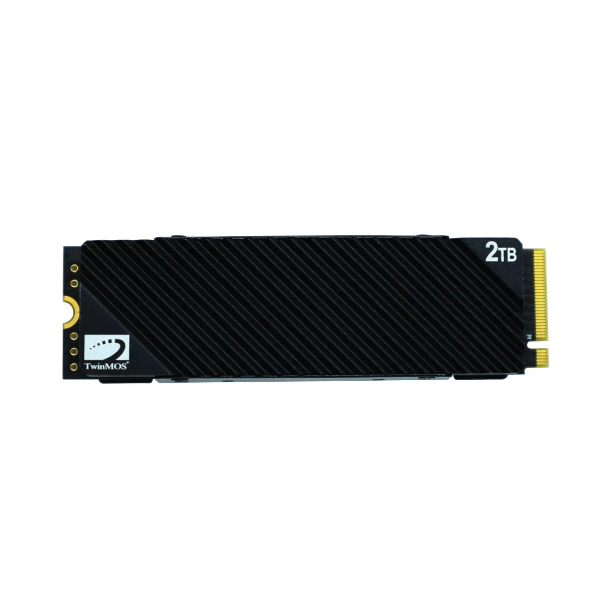
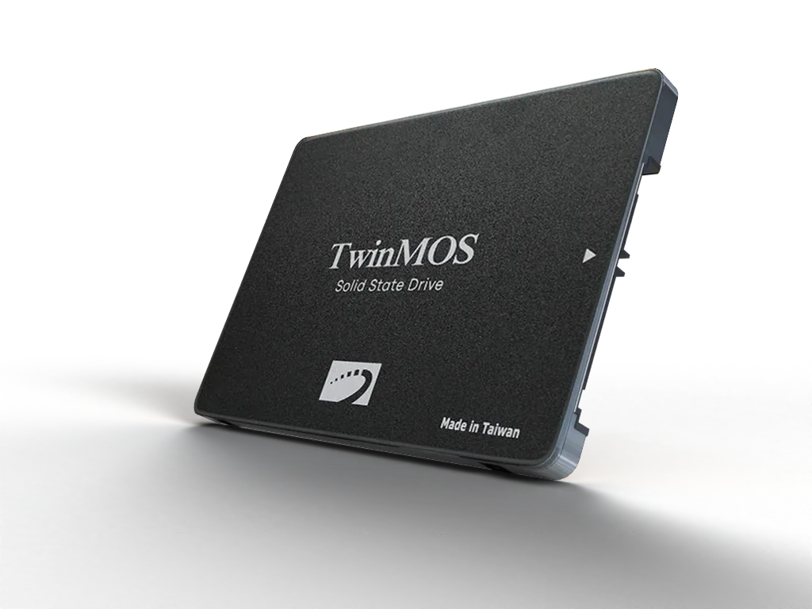

Home / Products / Comparison
Compare Products
Up to 4 products side-by-side. Differences are highlighted — share or print when done.
NEW NVCXP2TBG52280 View product ✕ |
 TMNVME2TBX4 View product ✕ |
 TM2TBH2U View product ✕ |
|
|---|---|---|---|
| Interface | PCIe Gen 5 x4 · NVMe 2.0 | PCIe Gen 4 x4 · NVMe 1.4 | SATA III 6Gb/s |
| Sequential Read | 14,000 MB/s | 7,500 MB/s | 580 MB/s |
| Sequential Write | 13,000 MB/s | 6,800 MB/s | 550 MB/s |
| Capacities | 1 / 2 / 4 TB | 1 / 2 TB | 128 GB – 2 TB (2.5") |
| Form Factor | M.2 2280 | M.2 2280 | 2.5-inch + M.2 2280 |
| Heatsink | Graphene (8.2 mm) | Graphene sheet | — |
| DRAM Cache | Yes (DDR4) | Yes (2GB @2TB) | No (HMB n/a) |
| Endurance (TBW) | 2,000 TBW | 1,200 TBW | 640 TBW |
| Power Loss Protection | — | Yes | — |
| Best for | Flagship builds · creators | Gaming · pro workloads | Desktop upgrades on SATA |
| Warranty | 5 years | 5 years | 3 years |
| Where to Buy | Find stores → | Find stores → | Find stores → |
How to read this table: highlighted cells differ across products. “—” means the feature is not present; “0” would be an actual zero value. Discontinued products show replacement suggestions automatically.